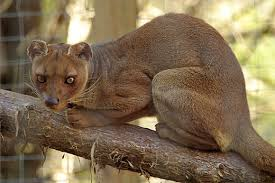
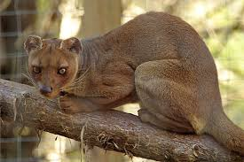
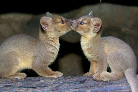
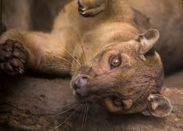
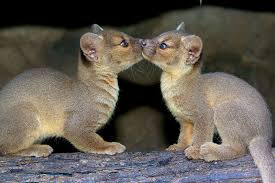
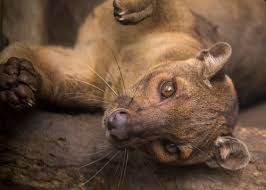
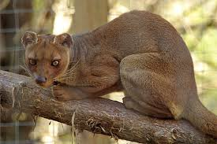
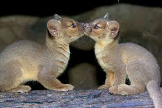
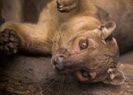

.jpeg "The Fossa") 

.jpeg "The Fossa") 


The Fossa is most definitely a real animal! The Fossa is a medium-sized carnivore that is found exclusively on the island of Madagascar. The Fossa belongs to the Malagasy Carnivores group which are thought to have descended from Mongoose-like ancestors that arrived on Madagascar from Africa up to 24 million years ago.
The fossa is a cat-like, carnivorous mammal endemic to Madagascar. It is known to feed on lemurs and most other creatures it can get its claws on, from wild pigs to mice. They are related to the mongoose family. Unlike mongooses, and more like felines, the fossa has retractable claws and fearsome catlike teeth. Its coat is reddish brown and its muzzle resembles that of a dog. Fossas have a long tail that comes in handy while hunting and maneuvering amongst the tree branches.



The fossa is found in Madagascar. It is also found in forested areas and ranges from coastal lowlands to mountainous areas. The breeding age is about four years. They are found within the Ankarana and Analamera Special Reserves. In Madagascar that is their natural habitat and environmental place. They like places that have plants and eco-plantation it also like to jump in high leafy trees like big trees. The fossa population in Madagascar to be fewer than 2,500 individuals.
The habitat loss is a main reason of the causes of decline, fragmented populations become isolated in remaining forests spots. It is one of madagascar's largest predator. Humans although severely affected fossas, they are often hunted by farmers for their livestock. In Madagascar there has been deforestation of humans livestock. Humans think that they are dangerous to humans which they are really not. To help conserve this species by working in the field with Earth watch click here.